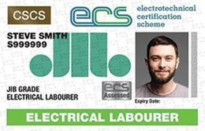

Professional ECS certification for educators delivering electrical and construction-related training across the UK

Official-style Lecturer ECS Card - Professional Training Certification
The Lecturer ECS Card is issued to educators and trainers responsible for delivering electrical, construction and health & safety training. It helps confirm that you meet professional standards for technical teaching and understand current UK safety and compliance requirements.
Holding a Lecturer ECS Card demonstrates to training centres, employers and awarding bodies that you are suitably qualified, experienced and recognised for delivering high-quality, industry-relevant training.
The Lecturer ECS Card is suitable for educators delivering training in a wide range of electrical, construction and health & safety topics.
Principles of electricity, circuits, protection and systems design.
Site safety rules, risk assessments and method statements.
Hands-on installation methods and safe working practices.
Building regulations, wiring standards and industry guidance.
Recognised for delivering technical and safety training across the UK.
Shows that your training aligns with current safety and compliance expectations.
Supports your professional status as a lecturer, trainer or assessor.
Helps secure roles with training providers, colleges and private centres.
The Lecturer ECS Card normally costs £79. This covers the processing of your application and the issue of your card once approved.
The Lecturer ECS Card is usually valid for three years. To keep it up to date, you will need to renew before the expiry date and show ongoing teaching activity and competence.
You should hold relevant teaching or training qualifications in electrical, construction or safety-related subjects, along with practical experience delivering courses and a good understanding of UK health and safety requirements.
Yes. The Lecturer ECS Card is recognised across UK training centres and providers, so you can deliver training at multiple locations where ECS or equivalent recognition is required.
The card supports teaching a broad range of electrical and construction-related subjects, including electrical theory, installation practices, construction safety, regulations and other technical or compliance-based training topics.